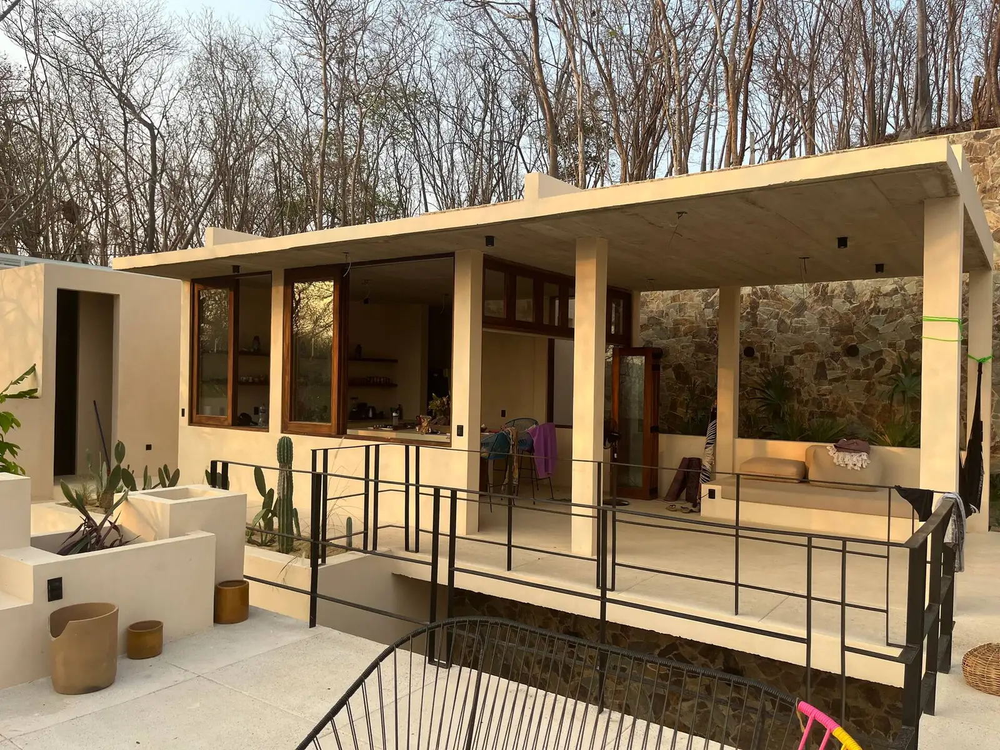
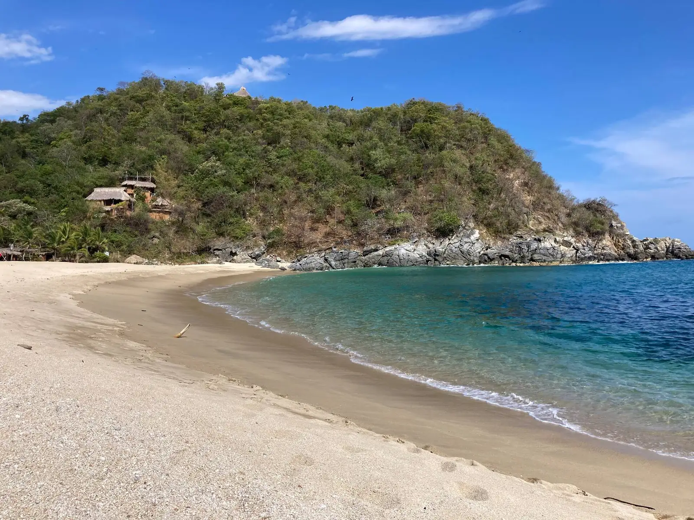
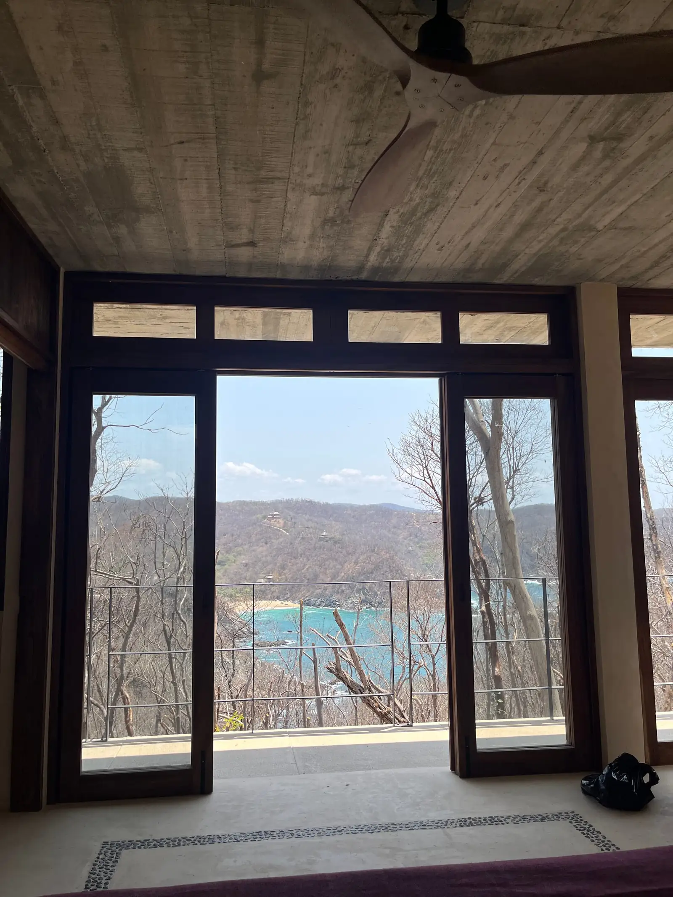
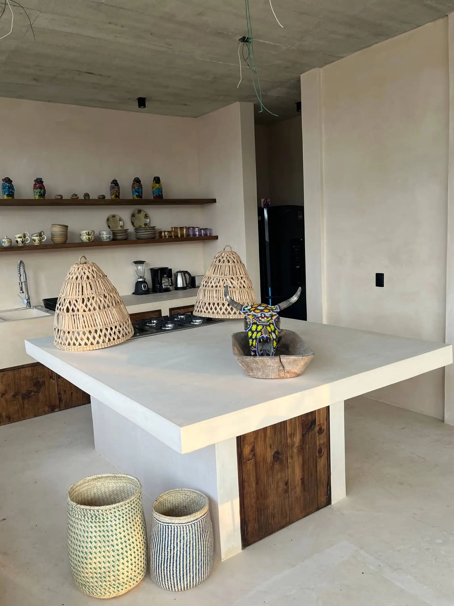
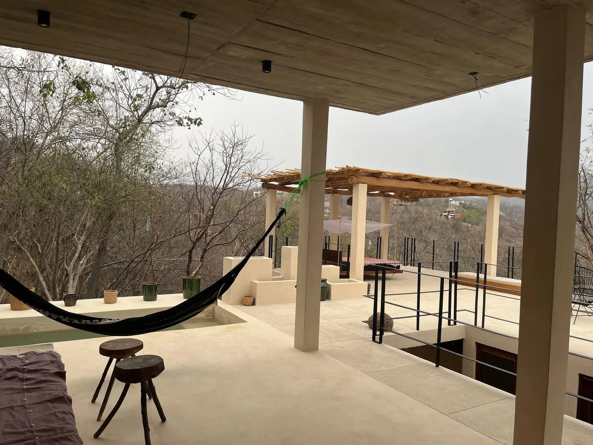
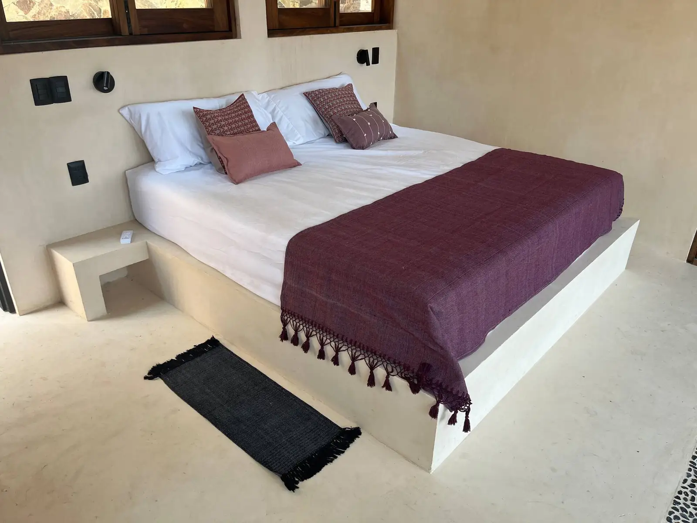
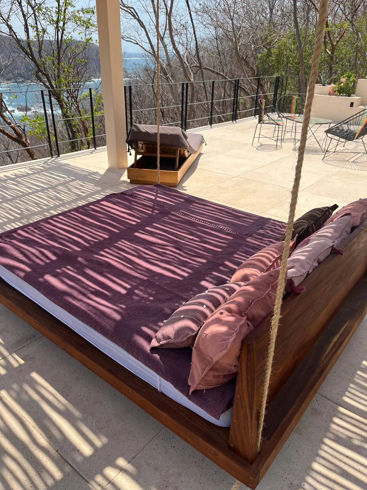
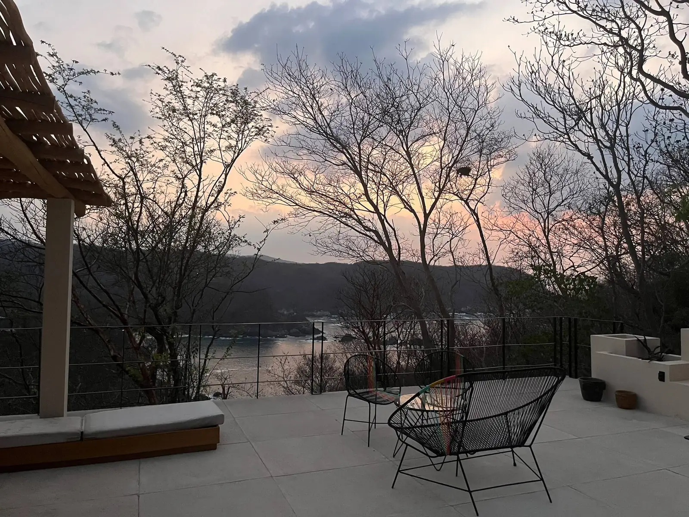

01 / 05
Llegar.
La casa aparece entre los árboles, al final del camino.

Una casa sobre el Pacífico
La Boquilla, Oaxaca. El tiempo es tuyo.

La vista desde la recámaraUna casa entre los árboles, sobre una ladera de la costa de Oaxaca. Madera, sombra y espacios abiertos para cocinar juntos, descansar junto a la alberca y ver cambiar la luz sobre La Boquilla.

La casa aparece entre los árboles, al final del camino.


La cocina, la sala y la terraza se abren al paisaje.

Dos recámaras con cama king y baño propio.

Un baño, un libro y un lugar a la sombra.

El último plan del día: quedarse a mirar.
Fotografías reales. Detalles que hacen la estancia.
Desliza para explorar
UN LUGAR PARA BAJAR EL RITMO
Un baño cuando todavía no hay nadie. Un desayuno sin reloj. Y el mar, siempre cerca.
Conoce la costaUna bahía para pasar la mañana. Un sendero entre los árboles. Dos maneras de acercarte al mar.
A unos 15–20 min a pie
Una bahía rodeada de vegetación y pequeñas playas entre las rocas. Baja con tiempo para caminar, comer en la zona y volver sin prisa. Las condiciones del mar cambian: consulta localmente antes de nadar.
Ver la zona en el mapaUn sendero con unos 330 escalones
Desde la casa, un camino rústico y empinado baja entre los árboles. Lleva calzado adecuado y agua, y cuenta con la subida de regreso. El acceso forma parte de la aventura.
Ver la zona en el mapaCasa Xololo está en una ladera, rodeada de naturaleza. Hay escaleras, caminos rústicos y espacio para bajar el ritmo. Estos detalles te ayudarán a planear.
Desde $6,300 MXN / noche2 personas · mínimo 2 noches
Desde $6,300 MXN por noche para 2 personas, con un mínimo de 2 noches. El total depende de las fechas y del número de personas; Alex te lo confirma por escrito antes de reservar.
El aeropuerto más cercano es Huatulco. La casa está a 7 km de Puerto Ángel y a 1.2 km de Playa La Boquilla (unos 5 minutos en auto o 15–20 a pie). Recomendamos venir en auto; Alex te manda la ubicación y las indicaciones.
El último tramo de acceso es un camino de grava y piedra, rústico y accidentado. Alex te comparte las indicaciones antes de llegar. La casa se recorre por escaleras.
Alberca, cocina equipada, terrazas, ventiladores, mosquiteros y wifi por Starlink. Consulta con Alex cualquier servicio imprescindible para ti, incluido el aire acondicionado y servicios adicionales.
Envía tus fechas y el número de personas. Alex confirma disponibilidad, precio total, espacios incluidos y condiciones por escrito. Una consulta no bloquea fechas ni confirma una reserva.
Coméntale a Alex las edades antes de reservar. Hay escaleras, desniveles y alberca; la casa requiere supervisión constante de los niños y puede no encajar con todas las necesidades de movilidad.
Es un lugar para descansar. Confirma con Alex las normas vigentes, horarios de llegada y salida, mascotas, pagos y cancelaciones antes de reservar.
Nos vemos
junto al mar.
Cuéntale a Alex tus planes. Ella te confirma las opciones y todos los detalles de tu estancia.
Desde $6,300 MXN / noche2 personas · mínimo 2 noches
Reserva directo con Alex: te confirma el total exacto para tus fechas, sin comisiones de plataforma.
★ Alexandra es Superanfitriona en Airbnb · 4.88 con más de 220 reseñas